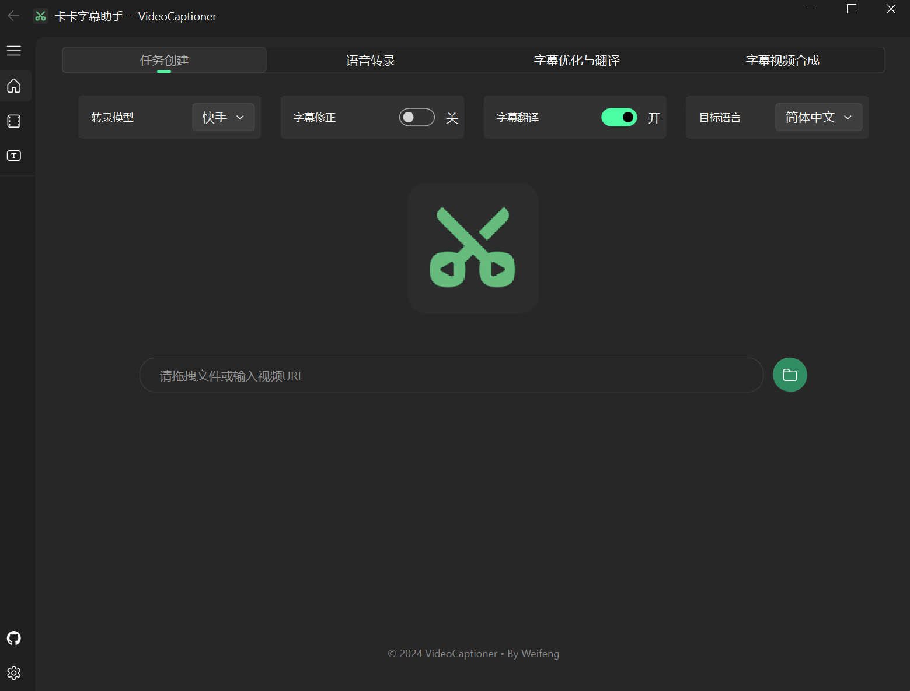

声音 → 文字
听懂视频或录音中的讲话，生成文字和时间戳。
输入视频、录音或已有字幕，它可以识别讲话、生成带时间戳的字幕，整理和翻译文字，再输出字幕文件、带字幕视频或新配音。视频主要承载画面，核心处理对象是讲话内容及其时间对应关系。
听懂视频或录音中的讲话，生成文字和时间戳。
断句、纠错、翻译，整理成单语或双语字幕。
按字幕生成新配音，适配时间，再输出音频或视频。
现成语音模型负责“听”，大语言模型或翻译服务负责“理解和改写”，语音合成服务负责“读”，FFmpeg 负责处理音视频。VideoCaptioner 负责把各步连接起来，维持字幕编号与时间轴对应，并处理结果校验、重试和输出。基础软件包只是连接工具；要在本地完成智能处理，还需要模型文件、运行程序及相应硬件。
例如：给它一个英文讲解视频，可以得到中文字幕、中英双语视频；接入配音服务后，还可以生成中文配音版本。可以只用其中一个步骤。
定位：字幕制作与语音本地化工具。音乐制作、专业混音、自动剪辑和口型同步不属于这里已确认的通用能力。
已有音视频 → 识别成文字 → 整理、翻译 → 输出字幕，或重新生成语音。

从语音识别到字幕翻译，再到配音与合成。先看效果，再理解它如何工作。
上游字幕烧录代码生成 MP4
10 条英文与双语字幕对照
识别、模型校正与翻译质量
选择一个步骤，查看输入、方法与输出。
模型负责理解文本，程序负责时间轴、条目编号、格式、校验与重试。词级时间戳、模型质量和原始录音共同决定最终效果。
桌面界面适合逐条检查；命令行适合自动化。
支持必剪、剪映、Whisper API 与本地 Whisper 路径。识别文字，同时保留字幕需要的时间信息。
用语义拆分长句，修正识别文字，生成目标语言字幕。可以提供术语提示，启用反思式翻译。
接入 Edge TTS、SiliconFlow 和 Gemini 等语音服务。支持音色映射、时长适配，以及替换、混合或压低原声。
导出 SRT、ASS、TXT、JSON。软字幕作为轨道嵌入视频；硬字幕直接写入画面，可设置字体和样式。

源码与文档确认的能力；实际质量取决于录音和模型。
视频或录音中的讲话转成文字和时间戳，输出字幕或纯文本；长音频可分块处理。
语义断句、限制句长、模型辅助纠错。可手动修改原文与译文、合并或删除字幕条目、重译选中条目。
删除字幕不会剪掉对应的视频画面。翻译已有字幕，保留时间对应；显示原文、译文或双语，调整上下排列。术语提示可辅助统一用词。
设置字体、字号、颜色、描边、阴影、背景与边距；分别设置双语样式。输出字幕轨道，或烧录进画面。
不等于能擦除视频中原有的硬字幕。同语言换配音，或翻译后生成其他语言配音；选择音色，按标签分配说话人，输出音轨或配音视频。
声音克隆仅限支持的服务路径，需要参考音频与文本；说话人标签不等于自动识别人。批量转录、字幕处理或字幕全流程；命令行组合步骤。获取支持平台的视频，导出 SRT、ASS、TXT、JSON。
下载依赖平台访问条件；并非所有配音功能都有批量界面。时间轴是重要能力，但不是任何不同步问题都能自动修好。
例：一句字幕安排在第 10～13 秒，生成配音后尝试适配这段时间；不保证任意文本都能自然地塞进去。
“有时间戳”意味着记录出现时间，不等于每个字都已精准对齐。
部分 Faster-Whisper-XXL 路径支持人声分离 / 降噪预处理，主要用于改善识别；不能当成已验证的通用人声、伴奏分轨导出功能。
配音可替换、混合或压低原声。“压低”在所核查实现中是降低原声音量，不代表去掉原讲话、完整保留背景音乐。
自动剪辑、画面生成、字幕 OCR、知识总结和自动发布，不属于本次确认的完整内置流程。
本地模型越多，对硬件和配置的要求越高。
先用现有电脑跑通小样，确认质量与使用频率，再决定是否下载本地模型。在线模式不要求独立显卡，但需要网络；部分服务需要密钥并可能收费。视频合成仍占用本地计算与磁盘。
源码 / Python 安装需要 Python 3.10～3.12，以及界面、网络请求、缓存等软件包，通常随安装自动配置。桌面打包版可自带运行环境。
FFmpeg / FFprobe 用于提取音轨、读取时长、字幕渲染和合成；支持的桌面打包版可内置。中文显示需要可用的中文字体。
选择本地引擎与模型文件，或在线识别服务。仅处理已有字幕时，不需要运行识别模型。
LLM 断句、纠错和大模型翻译需要服务地址、密钥与模型名。Bing / Google 等普通翻译路径不要求配置大模型。
按需接入 Edge TTS、SiliconFlow 或 Gemini TTS。Edge TTS 无需密钥但需要网络；其他服务按要求配置账户和密钥。
在线视频下载依赖 yt-dlp 及平台访问条件。磁盘需容纳原文件、临时音视频和输出结果；本地运行还要保存模型。
官方入门文档建议普通使用 4GB 以上，本地 Whisper 8GB 以上。这是入门参考，不是所有模型流畅运行的保证。长视频、4K、多个任务同时处理，会增加耗时和资源占用。
只编辑字幕负担较低；烧录字幕需要重新编码，耗时随视频长度、分辨率与编码设置变化。
核查版本依赖包括：PyQt5、PyQt-Fluent-Widgets（界面）；requests、openai（服务连接）；diskcache、tenacity、json-repair、langdetect（缓存、重试与文本处理）；pydub、Pillow、fonttools（音频、图像与字体）；yt-dlp、edge-tts、modelscope（下载、配音与模型相关支持）；platformdirs、psutil、GPUtil，以及 Python 3.10 所需的 tomli。
包安装成功不代表模型、外部程序或服务已配置。可运行 videocaptioner doctor 检查环境；实际安装要求以所用版本为准。
本机已成功运行字幕烧录；识别、大模型翻译和配音尚未实际验证。本页是研究展示，不能上传文件处理，也不代表完整服务已经配置好。
如果目标只是自动识别和翻译，它与 Y2A-Auto 有明显重叠。若希望仔细控制字幕阅读体验，或把自有视频做成多语言版本，它更值得进一步实测。
下列是根据各项目能力推导的衔接方式，尚未验证相互集成。
本页是研究展台，不能上传视频在线处理。VideoCaptioner 围绕已有音视频工作；免费服务入口依赖网络，LLM 功能需配置服务。本次样片只验证字幕合成，不代表识别、翻译与配音全流程质量。
{kind=link}